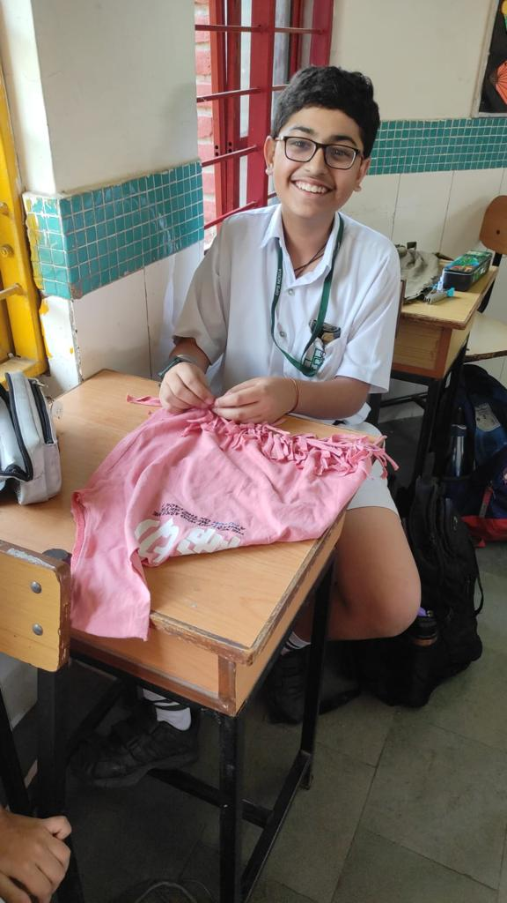
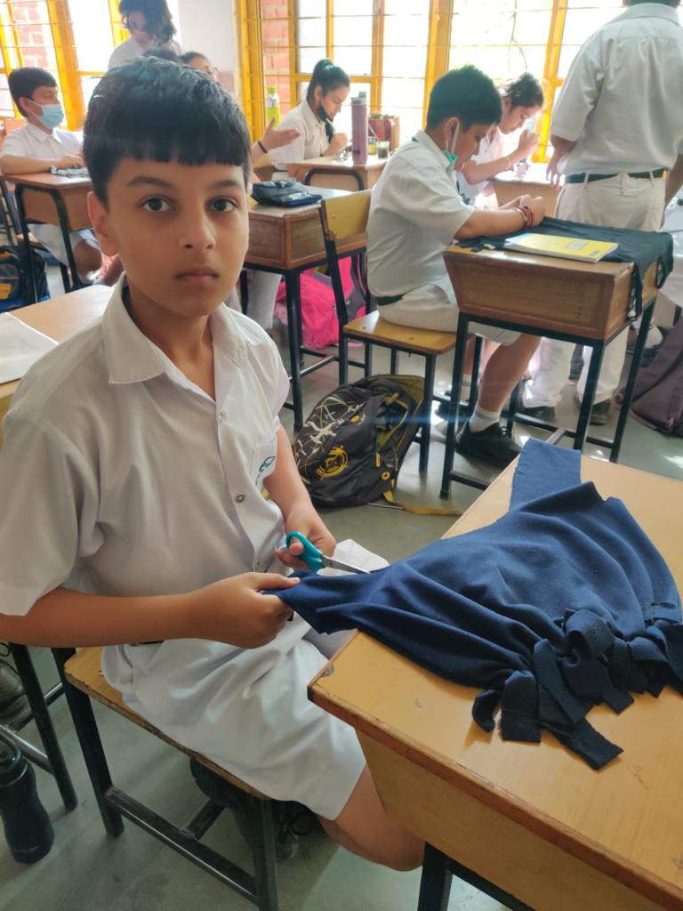
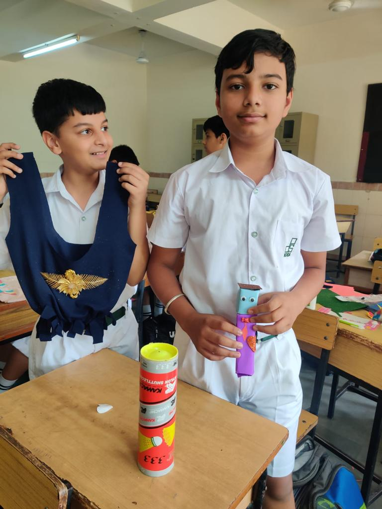
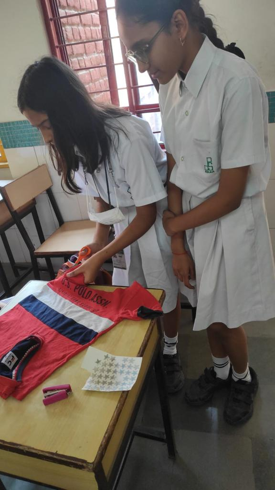
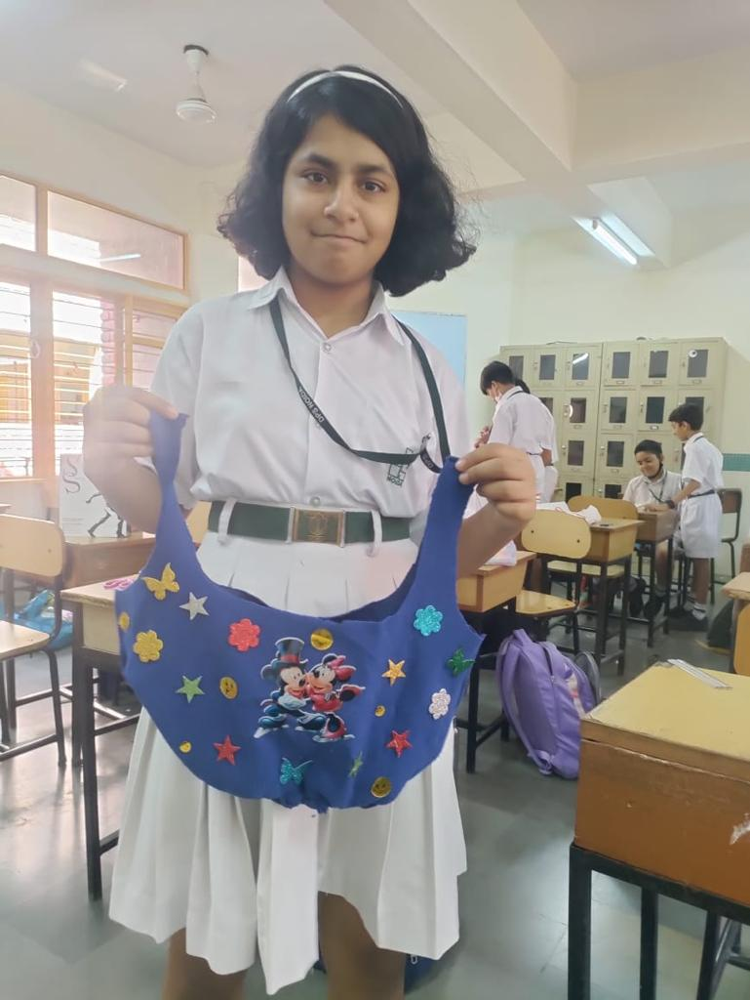
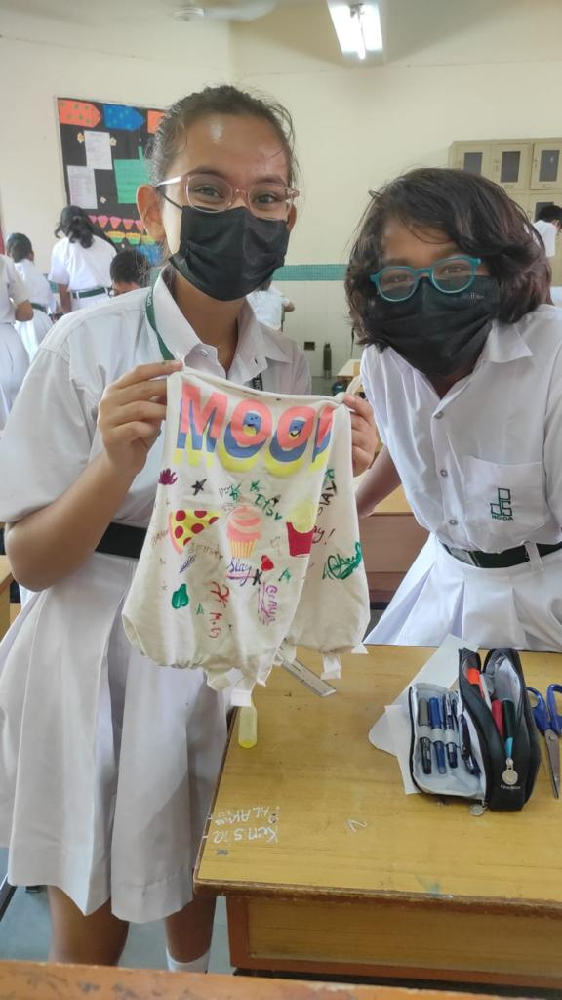
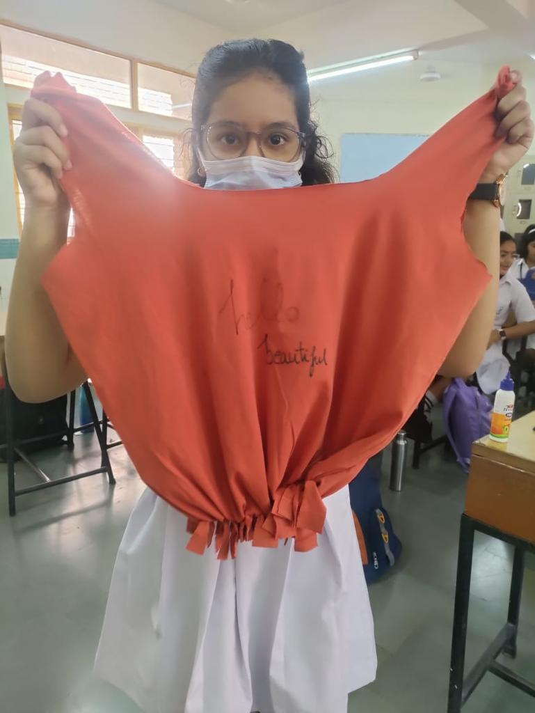

Consumer Actions
Practice mindful consumption by buying fewer but higher quality items that will last longer and remain style.
Industry Changes
Brands can shift from fash fashion to slow fashion and should design garmnents with circularity in mind, using materials that can be recycled easily or upcycled.
Policy Interventions
Governments should implement regulations to limit harmful practices, such as banning certain toxic chemicals in textiles and setting enviormental standards for production.
Collaboration
Brands, manafacturers, and organizations can collaborate to share best practices, develop sustainable solutions, and drive positive change.
Education
Educate the public about the consequences of fashion waste and encourage them to make conscious choices.
Innovation
Invest in research and development of innovative materials, technologies, and processes that reduce the enviormental footprint of fashion production.
Shri Narendra Modi, to promote the concept of sustainable development, wore a jacket made out of recycled bottles.
GOVERMENT NGO'S
To inform customers about the negative environmental effects of fast fashion and to encourage sustainable fashion choices, the Indian government and a number of non-governmental organizations (NGOs) have launched awareness campaigns.
Traditional Textiles
An effort has been made to support the traditional handicraft and handloom businesses. Compared to manufactured fast fashion goods, these sectors frequently generate apparel with reduced environmental footprints.
Recycling Infrastructures
The Indian Government have put an emphasis on recycling. Improving waste management systems, including recycling and disposal facilities, can contribute to reducing the environmental impact of the fashion industry.
DPS Noida took initiative and conducted an activity for making t-shirt to bag DIY. Turning old t-shirts into bags is a creative and sustainable crafting activity that repurposes clothing and reduces waste.
      